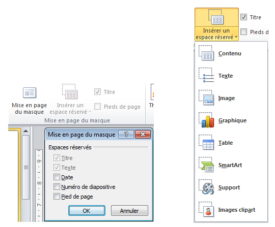
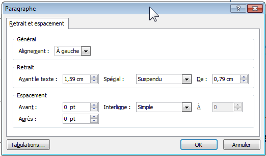
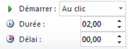
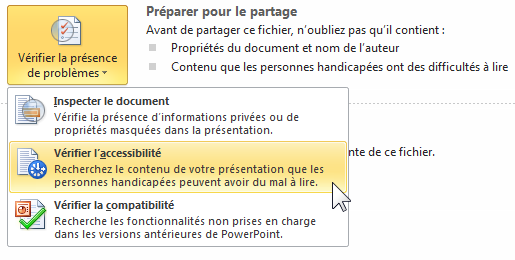
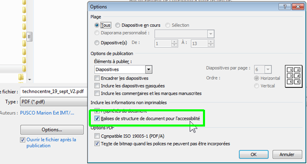

Créer des documents PowerPoint accessibles
Produire un document PowerPoint accessible nécessite de respecter différentes recommandations. Elles sont synthétisées ci-après (guides détaillés consultables sur le site de la DINSIC). Pour vous aider PowerPoint intègre un outil permettant de vérifier l’accessibilité d’une présentation. Cet outil identifie les principales erreurs et propose des solutions. N’hésitez pas à vous y référer.
Masques de diapositive
Définir des masques de diapositives est la première chose à faire et une condition sine qua none pour créer une présentation homogène et accessible.
- Ouvrir le mode Masque des diapositives pour mettre en forme vos diapositives (dans l’onglet
Affichage, sélectionnerMasque des diapositives). - Utiliser les sous-menus
Mise en pages du masqueetInsérer un espace réservé. - Éviter d’ajouter des Zones de texte ou des Images directement dans la présentation via le menu
Insertion. - Créer autant de masques que de types de diapositives nécessaires. 
Remarque : Si vous modifiez le masque des diapositives ou les mises en pages après avoir créé les différentes diapositives, vous devrez réappliquer les mises en page modifiées aux diapositives existantes de votre présentation en mode Normal.
Attributs de la présentation
1. La langue
Pour qu’un lecteur d’écran puisse restituer correctement le contenu de votre présentation :
- La langue principale doit être définie dans le menu :
Fichier > Options > Langue. - Tout changement de langue ponctuel doit être signalé en sélectionnant le groupe de mots concerné puis
Révision > Langue > Définir la langue de vérification.
2. Les autres propriétés
Renseigner les champs « Titre », « Auteur » et « Mots clefs » dans la zone « Propriétés » (colonne de droite), accessible depuis le menu Fichier > Informations.

Ces informations accessibles à tous via un simple clic dans Windows sur un fichier (affichage dans la partie basse de la fenêtre de dialogue) ou via un clic droit dans Propriétés, pourront également être lues par un lecteur d’écran.

Titre des diapositives
Pour éviter toute confusion entre des diapositives, notamment si l’utilisateur parcourt une présentation à l’aide d’un lecteur d’écran :
donner un titre spécifique à chaque diapositive, à insérer dans la zone : « Cliquer pour ajouter un titre ».
Rédaction des contenus
Limiter les abréviations et acronymes, et expliciter à la première occurrence ceux qui ne font pas partie du langage courant.
Conserver l’accentuation sur les majuscules (exemple : É ou Ç) : menu Insertion > Symbole ou utiliser les raccourcis clavier.
Mise en forme des contenus
Utiliser une police de caractères sans serif (sans empattement comme c’est le cas d’Arial et Helvetica) en corps 12 pixels minimum.
Commencer les phrases par une majuscule et ne pas abuser des phrases entièrement écrites en majuscules.
Eviter de justifier le texte et privilégier l’alignement à gauche.
Ne pas utiliser de retour chariot ou de tabulation pour espacer des paragraphes, utiliser les options disponibles via un clic droit > Paragraphe > Retrait et Espacement.

Couleurs et contrastes
- Assurer un contraste suffisant entre la couleur du texte et celle du fond :
- 4.5:1 pour du texte de taille normale (12pts ou 16px).
- 3:1 pour du texte de grande taille (150% minimum de la taille normale ou 120% si gras). Si vous utilisez des combinaisons de couleurs différentes de celles préconisées par la charte Orange Groupe, téléchargez gratuitement l’outil Colour Contrast Analyser qui vous permettra de vérifier très simplement la qualité de vos contrastes.
- S’assurer que la couleur n’est pas le seul moyen utilisé pour communiquer l’information Certaines personnes ne perçoivent pas ou mal les couleurs, il est donc primordial d’utiliser un moyen suppléant la couleur pour véhiculer l’information.

Listes à puces ou numérotées
Eviter de créer manuellement des listes, utiliser le style « liste » (à puces ou numérotées) pour énumérer les éléments de même nature.

Images
Un document peut tout à fait contenir des images et être accessible à une personne non-voyante. Il faut simplement que l’information portée par l’image soit retranscrite textuellement.
- Pour les images porteuses d’informations : associer un texte de remplacement décrivant le contenu informatif via un
clic droit > Format de l’image > Texte de remplacement > champ « Description ». - Pour les images décoratives/illustratives : laisser le champ
descriptionvide. Pour les images informatives complexes : rédiger un court texte de remplacement et une description détaillée située à proximité de l’image (ou accessible via un lien). Exemple disponible dans le guide du concepteur RGAA

Pour les graphiques ou schémas : utiliser les composants SmartArt plutôt que des images (menu Insertion > SmartArt).
Le contenu informatif des graphiques doit être décrit dans le texte de remplacement (Format de l’objet ou de l’image > Texte de remplacement > Description).
Liens
Une personne non-voyante va, pour naviguer plus rapidement dans un document, demander à son lecteur d’écran de lui lire l’ensemble des liens présents sur une page. Chaque lien sera donc lu en dehors de son contexte visuel et doit donc se suffire à lui-même.
Rédiger des intitulés de liens explicites (compréhensibles hors contexte visuel de la page).
Annoncer les liens qui déclenchent l’ouverture d’une nouvelle fenêtre (ajouter « nouvelle fenêtre » dans le libellé).

Pour chaque fichier téléchargeable, indiquer le nom, le format, le poids et la langue du fichier si celle-ci est différente de la langue principale du document.
Tableaux de données
Les tableaux sont des composants par définition difficilement accessibles pour un non-voyant. Il faut donc les utiliser avec parcimonie et les structurer le plus simplement possible.
Ne pas utiliser les tableaux à des fins de mise en forme.
Éviter de fusionner des cellules, d’insérer des images ou de laisser des cellules vides.
Ajouter une description s'il s'agit d'un tableau complexe, clic droit : Format de la forme > Texte de remplacement > Description
Contenus audio ou vidéo
La communication audiovisuelle est aujourd’hui très fréquente en entreprise. Mais parce que certaines personnes peuvent ne pas voir ou ne pas entendre il est primordial de suppléer l’information transmise dans une modalité par une autre.
Fournir une transcription intégrale des contenus audio (solution nécessaire et suffisante).
Empêcher toute lecture automatique de contenu vidéo ou audio (menu Animations : démarrer au clic).

Tout contenu vidéo doit respecter ces prérequis :
- Fournir des sous-titres pour restituer l’ensemble des informations véhiculées par la bande son.
- Fournir une audiodescription si la vidéo présente des informations accessibles seulement via les images.
- Utiliser des vidéos sans flashs rapides (pas plus de 3 clignotements par seconde).
Ordre de lecture des éléments
L’ordre de lecture qui sera suivi par une synthèse vocale peut être vérifié depuis le volet de sélection (menu Accueil > Organiser > Volet de sélection).
Attention : l’ordre doit être décroissant car c’est le dernier élément de la liste qui est lu en premier par le lecteur.

Il est important de vérifier cet ordre directement dans les masques des diapositives.
Vérificateur d’accessibilité intégré
Il est important de contrôler l’accessibilité de la présentation à l'aide du vérificateur d’accessibilité (menu : Fichier > Vérifier la présence de problèmes > Vérifier l’accessibilité).

Convertir une présentation PowerPoint en fichier PDF
Enregistrer la présentation en PDF : Fichier > Enregistrer sous et de sélectionner le type de fichier PDF.
Cocher la case « Balises de structure de document pour l'accessibilité ».

Remarque : pour les présentations de plus de 50 diapositives, il faut conseiller aux lecteurs de modifier le paramètre suivant dans Adobe :
Édition > Préférences > Lecture > Option de lecteur d’écran : « Lire l’intégralité du document »

Et pour vérifier l’accessibilité d’un document PDF : télécharger PDF Accessiblity Checker (PAC 3).
Ressources
- Créer des documents bureautiques accessibles, DINSIC (français).
- Accessibilité PowerPoint, WebAIM (anglais).